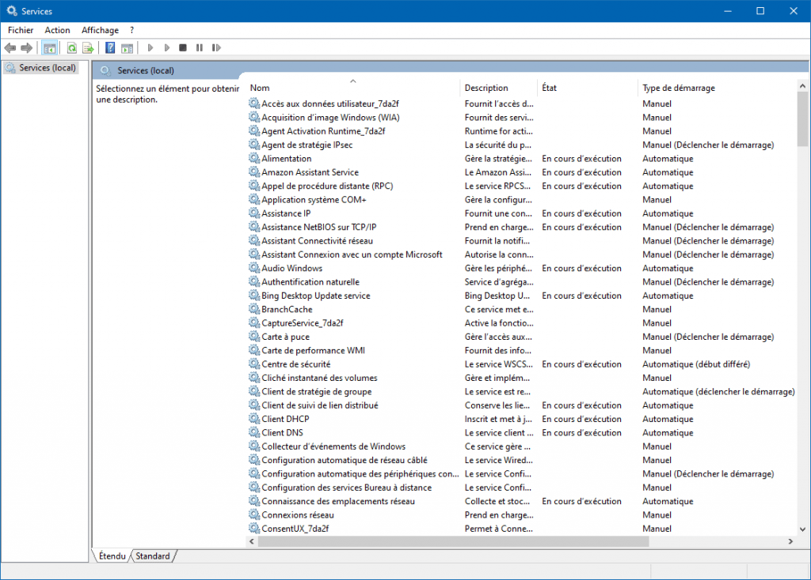

Tuto comment faire pour désactiver les services inutiles dans Windows 10 .
Les services sont configurés pour démarrer en même temps que Windows. Ils fonctionnent ensuite en arrière-plan tant que Windows est en cours d’exécution.
Certains services sont indispensables pour Windows alors que d’autres sont complètement inutiles pour la plupart des utilisateurs
Windows a pour but d’être un système d’exploitation prêt-à-l’emploi pouvant être utilisé par tout type d’utilisateur et tout type d’appareils (PC, tablette, station de travail…) qu’ils soient connectés ou non à un réseau, qu’ils soient équipés ou non d’une carte à puces, d’un scanneurs, de périphériques Bluetooth…
Beaucoup de ces services ne sont d’aucune utilité, bien qu’ils fonctionne en ce moment même sur votre ordinateur.
Ces services inutiles utilisent des ressources système précieuses qui peuvent augmenter la rapidité de votre ordinateur.
Pour optimiser Windows 10 au maximum, la désactivation de ces services inutiles peut vous aider à avoir un système clean, plus léger et adapté à votre usage.
Et c'est parti !!!
Dans ce tuto nous allons utilisé l'invite de commandes en tant qu'admin:
sc config "Nom du service" start= disabled
Nos techniciens informatiques sont formés à réparer les systèmes d’exploitation Windows, Apple, Ubuntu, Debian, Chrome OS et Android. Nous avons les connaissances requises pour travailler sur une large gamme de marques comme Dell, Toshiba, Samsung, Mac ou encore Lenovo, de manière à satisfaire le plus grand nombre et répondre aux attentes de chacun.
Dev-Pro Informatique vous propose un service après-vente de qualité.
Nous vous offrons un service personnalisé selon vos besoin.
(450) 502 1916
Saint Liboire
J0H 1R0, Québec, Canada